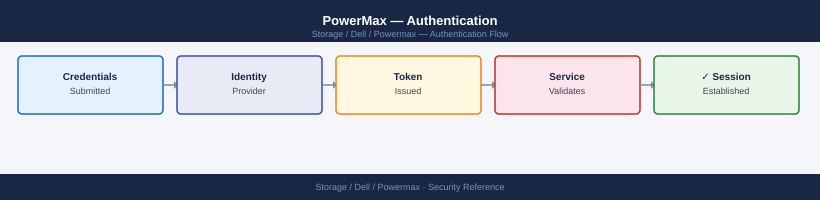

PowerMax — Authentication¶

Before you begin¶
- Access: Storage admin credentials (cluster admin or equivalent)
- Change management: security changes require CAB approval in most environments
- Rollback plan: document current state before any security control change
- Testing: validate in a non-production environment first where possible
Overview¶
PowerMax has two primary authentication surfaces: Unisphere for PowerMax (GUI and REST API) and Solutions Enabler (SYMCLI) running on management hosts. Both must be secured independently. Unisphere supports local accounts and external directory integration (LDAP/Active Directory). Solutions Enabler authentication is controlled at the OS level and via the SYMAPI daemon configuration.
Unisphere Local Accounts¶
By default, Unisphere is provisioned with a local administrative account (smc) during array installation. Local accounts are stored in the Unisphere user database on the management appliance.
| Account | Default Role | Usage |
|---|---|---|
smc |
Administrator | Factory default admin account; should be replaced with named accounts after LDAP setup |
| Custom local accounts | Any role | Created via Unisphere → Settings → Security → Users |
# Check local user accounts via Unisphere REST API
curl -sk -u admin:password \
https://<unisphere-host>:8443/univmax/restapi/100/system/user \
| python3 -m json.tool
# List users from SYMCLI (solutions enabler CLI)
symuserdb list -sid <SID>
{
"id": "0c47c925-3f8a-4a12-b8e9-2a1f5c8d9e3b",
"resourceLink": "/univmax/restapi/100/system/user",
"expirationTime": 1735689600,
"maxPageSize": 100,
"pageSize": 50,
"pageStartIndex": 0,
"resultList": {
"result": [
{
"user_id": "admin",
"user_name": "Administrator",
"role_id": "system_admin",
"created_date": "2023-01-15T08:30:22Z",
"last_login": "2024-01-12T14:22:15Z"
},
{
"user_id": "svc_monitor",
"user_name": "Monitoring Service",
"role_id": "monitor",
"created_date": "2023-06-20T10:15:00Z",
"last_login": "2024-01-12T16:45:33Z"
},
{
"user_id": "backup_user",
"user_name": "Backup Operator",
"role_id": "operator",
"created_date": "2023-11-02T09:22:18Z",
"last_login": "2024-01-11T23:10:05Z"
}
]
}
}
Symmetrix ID: 000297900001
User Database:
User Name Role Created Last Login
admin system_admin 2023-01-15 08:30 2024-01-12 14:22
svc_monitor monitor 2023-06-20 10:15 2024-01-12 16:45
backup_user operator 2023-11-02 09:22 2024-01-11 23:10
local_audit auditor 2023-09-08 14:33 2024-01-10 11:02
Common errors
| Error | Fix |
|---|---|
curl: (60) SSL certificate problem: self signed certificate |
Add the -k flag (already present) or import the Unisphere certificate into your system's CA bundle. |
symuserdb: Command not found |
Install Solutions Enabler CLI package or verify the PATH includes the SymCLI bin directory (typically /opt/emc/SYMCLI/bin). |
HTTP/1.1 401 Unauthorized |
Verify the admin credentials are correct and the user account has REST API access permissions in Unisphere. |
Break-glass account policy:
- Always retain at least one named local admin account in a privileged access vault (CyberArk, Thycotic, etc.) even when LDAP is the primary authentication method.
- The smc account should be disabled in production after LDAP is configured and tested. Re-enable only under emergency conditions.
- Rotate local account passwords on a 90-day schedule or per your organisation's password policy.
Active Directory / LDAP Integration¶
Unisphere for PowerMax supports LDAP (including Active Directory via LDAP) for centrally-managed authentication. Users authenticate with their AD credentials; Unisphere maps AD group membership to internal roles.
Configuration Steps¶
- Navigate to Unisphere → Settings → Security → LDAP Configuration.
- Enter the LDAP server address (use the fully-qualified domain name, not an IP, to facilitate failover to another DC).
- Set the LDAP port:
389(LDAP) or636(LDAPS — recommended). - Provide bind credentials — use a service account with read-only directory access (not a personal account).
- Set the base DN for user searches: e.g.,
DC=corp,DC=example,DC=com. - Set the user filter: e.g.,
(sAMAccountName=%s)for Active Directory. - Map AD groups to Unisphere roles (see Role Mapping below).
- Test LDAP connectivity using the built-in test button in Unisphere.
- Log in with an AD account to validate before disabling local accounts.
LDAP Configuration Parameters¶
| Parameter | Example Value | Notes |
|---|---|---|
| LDAP Server | ldap.corp.example.com |
Use FQDN; configure secondary server for HA |
| Port | 636 (LDAPS) or 389 (LDAP) |
Always use LDAPS in production |
| Bind DN | CN=svc-powermax,OU=Service Accounts,DC=corp,DC=example,DC=com |
Read-only service account |
| Bind Password | (stored encrypted in Unisphere) | Rotate per password policy |
| Base DN | DC=corp,DC=example,DC=com |
Top-level search base |
| User Search Filter | (sAMAccountName=%s) |
AD attribute for username matching |
| Group Search Filter | (member=%s) |
Used to enumerate group membership |
| LDAP Timeout | 10 seconds |
Increase for slow WAN-linked DCs |
| Follow Referrals | Disabled | Enable only if using cross-domain referrals |
LDAP Connectivity Test (Pre-configuration Validation)¶
Before configuring LDAP in Unisphere, test connectivity from the Unisphere management host:
# Test LDAP bind from the Unisphere host (Linux)
ldapsearch -H ldap://ldap.corp.example.com:389 \
-D "CN=svc-powermax,OU=Service Accounts,DC=corp,DC=example,DC=com" \
-w 'ServiceAccountPassword' \
-b "DC=corp,DC=example,DC=com" \
"(sAMAccountName=testuser)" cn sAMAccountName
# Test LDAPS (port 636 — TLS)
ldapsearch -H ldaps://ldap.corp.example.com:636 \
-D "CN=svc-powermax,OU=Service Accounts,DC=corp,DC=example,DC=com" \
-w 'ServiceAccountPassword' \
-b "DC=corp,DC=example,DC=com" \
"(sAMAccountName=testuser)" cn
# LDAP (port 389) search result:
dn: CN=testuser,OU=Users,DC=corp,DC=example,DC=com
cn: Test User
sAMAccountName: testuser
search result
result: 0 Success
numResponses: 2
numEntries: 1
# LDAPS (port 636) search result:
dn: CN=testuser,OU=Users,DC=corp,DC=example,DC=com
cn: Test User
search result
result: 0 Success
numResponses: 2
numEntries: 1
Common errors
| Error | Fix |
|---|---|
ldap_bind: Invalid credentials (49) |
Verify the service account password is correct and the account is not locked in Active Directory. |
Can't contact LDAP server (-1) |
Confirm the LDAP server hostname resolves and port 389/636 is reachable from the Unisphere host (test with nc -zv ldap.corp.example.com 389). |
TLS: peer certificate cannot be authenticated with known CA certificates |
Add the LDAP server's CA certificate to the system trust store or disable certificate validation by adding -o LDAPTLS_REQCERT=never to the ldapsearch command. |
A successful bind returning the test user's attributes confirms LDAP connectivity. If the test fails, resolve the connectivity issue before configuring Unisphere — an incorrect LDAP configuration can lock administrators out.
Role Mapping¶
Unisphere roles are assigned to AD groups. A user's effective role is the highest-privileged role among all their group memberships.
| Unisphere Role | Permissions | Suggested AD Group Name |
|---|---|---|
Administrator |
Full access including user management, security settings, and all storage operations | GRP-PowerMax-Admins |
StorageAdmin |
Full read/write on storage provisioning (SGs, masking views, pools, SnapVX, SRDF). No access to security or user management | GRP-PowerMax-StorageAdmins |
SecurityAdmin |
Manage users, roles, certificates, and LDAP configuration. Cannot provision storage | GRP-PowerMax-SecurityAdmins |
Operator |
Read/write for routine operations (alert acknowledgement, scheduled tasks). Cannot create or delete storage objects | GRP-PowerMax-Operators |
Monitor |
Read-only across all array objects; can view performance data. No configuration changes | GRP-PowerMax-Monitor |
Separation of duties: Do not assign the same AD group to both
StorageAdminandSecurityAdmin. These roles should be held by different teams — storage engineering and security engineering respectively.
Multi-Factor Authentication (MFA)¶
Unisphere for PowerMax does not natively enforce MFA. To enforce MFA for Unisphere access:
- Place Unisphere behind a reverse proxy or application delivery controller (F5, Nginx) that enforces MFA via SAML 2.0 or OIDC.
- Use your organisation's Privileged Access Workstation (PAW) or jump server with MFA as the only access point to the management network where Unisphere is accessible.
- For REST API automation, use service accounts with locked-down source IP restrictions rather than personal credentials.
Solutions Enabler (SYMCLI) Authentication¶
SYMCLI runs on management hosts and communicates with the array via the SYMAPI daemon. Authentication is controlled at the OS and daemon level — there is no separate login prompt for SYMCLI commands.
Daemon User Configuration¶
# File controlling which OS users can connect to the SYMAPI daemon
/var/symapi/config/daemon_users # Linux/Unix
# Format: <username> <role> <host>
# Example entries:
admin Administrator *
storadm StorageAdmin 192.168.10.0/24
monitor Monitor 192.168.10.50
Common errors
| Error | Fix |
|---|---|
Permission denied |
Ensure the daemon_users file is readable by the SYMAPI daemon process (typically owned by root with 644 permissions). |
Invalid host specification in daemon_users |
Use valid CIDR notation (e.g., 192.168.10.0/24) or specific IPs; wildcards (*) are only valid for the host field when granting access to all hosts. |
Restrict SYMAPI daemon access:
- Only named service accounts and operations users should appear in daemon_users.
- Restrict by source IP where possible.
- Do not use root as the SYMAPI runtime account.
SYMAPI Network Configuration¶
# File listing which arrays the SE host can connect to
/var/symapi/config/netcnfg # Linux/Unix
# Example: restrict to specific array and SE host
# SYMAPI_SERVER - IP_ADDRESS - <sid> - <port>
SYMAPI_SERVER - 192.168.1.10 - 000123456789 - 2707 SECURE
# Confirm SE daemon is running
service storsrvd status # Red Hat/CentOS/Oracle Linux
systemctl status storsrvd # systemd-based Linux
● storsrvd.service - EMC Solutions Enabler Storage Server Daemon
Loaded: loaded (/usr/lib/systemd/system/storsrvd.service; enabled; vendor preset: enabled)
Active: active (running) since Wed 2024-01-17 14:32:18 UTC; 2 days ago
Docs: man:storsrvd(8)
Process: 4521 ExecStart=/opt/emc/SYMCLI/bin/storsrvd -daemon (code=exited, status=0/SUCCESS)
Main PID: 4522 (storsrvd)
Tasks: 8 (limit: 4096)
Memory: 156.2M
CPU: 2h 14m 32s
CGroup: /system.slice/storsrvd.service
└─4522 /opt/emc/SYMCLI/bin/storsrvd -daemon
Common errors
| Error | Fix |
|---|---|
Unit storsrvd.service could not be found. |
Verify Solutions Enabler is installed with rpm -qa | grep -i emc and reinstall if missing. |
Active: inactive (dead) since Wed 2024-01-17 09:15:42 UTC |
Start the daemon with systemctl start storsrvd and check /var/log/messages for startup errors. |
Permission denied when reading /var/symapi/config/netcnfg |
Ensure your user is in the symapi group or run the command with sudo. |
SE Authentication for Scripts¶
For automation scripts that run SYMCLI commands, use a dedicated service account:
# Check which user SYMCLI is running as
whoami
id
# Run SYMCLI via sudo as the dedicated service account
sudo -u storadm symcfg -sid <SID> show
# For scripted workflows using Solutions Enabler environment variables
export SYMCLI_OFFLINE=0
export SYMCLI_SID=000123456789
symcfg list
root
uid=0(root) gid=0(root) groups=0(root)
Symmetrix ID: 000123456789
Symmetrix Version: PowerMax OS 10.1.0.0.0.1234
Local Director Version: 5978.1091.1091
Symmetrix ID: 000123456789
Symmetrix ID: 000987654321
Symmetrix ID: 000555444333
Common errors
| Error | Fix |
|---|---|
sudo: user storadm is not in the sudoers file. This incident will be reported. |
Add the storadm user to sudoers with visudo and grant SYMCLI command permissions. |
SYMCLI_SID environment variable not set or invalid |
Verify the SID format is 12 digits and matches an actual array with symcfg list before setting SYMCLI_SID. |
Audit Logging¶
All configuration changes on PowerMax are recorded as audit events accessible via SYMCLI and Unisphere. Audit logs capture the user, timestamp, action, affected object, and result.
View Audit Events¶
# List all recent audit events (SYMCLI)
symaudit list -sid <SID>
# Verbose listing with timestamps and user information
symaudit list -sid <SID> -v
# Filter audit events for a specific user
symaudit list -sid <SID> -v | grep -i "<username>"
# Filter for destructive operations only
symaudit list -sid <SID> -v | grep -iE "Delete|Remove|Terminate|Failover|Split"
# Export audit log to file
symaudit list -sid <SID> -v > /tmp/powermax_audit_$(date +%Y%m%d).txt
# Array system events (includes hardware and state events)
symevent list -sid <SID> -v
# Events from a specific time window
symevent list -sid <SID> -start_time "05/01/2026 00:00:00" \
-end_time "05/07/2026 23:59:59" -v
Audit Event ID: 12847 | Timestamp: 05/06/2026 14:32:18 | User: admin | Operation: Create_Snapshot | Resource: SID_000297123456 | Status: Success
Audit Event ID: 12846 | Timestamp: 05/06/2026 13:15:42 | User: storage_ops | Operation: Modify_Policy | Resource: SRDF_Link_001 | Status: Success
Audit Event ID: 12845 | Timestamp: 05/06/2026 12:08:09 | User: admin | Operation: Delete_Snapshot | Resource: snap_20260505_prod | Status: Success
Audit Event ID: 12844 | Timestamp: 05/06/2026 11:22:33 | User: backup_svc | Operation: Failover_SRDF | Resource: SRDF_Link_002 | Status: Success
Audit Event ID: 12843 | Timestamp: 05/06/2026 10:45:17 | User: admin | Operation: Split_Clone | Resource: clone_dev_0150 | Status: Success
...
Total Audit Events: 847 | Filtered Results: 5
System Event ID: 5621 | Timestamp: 05/06/2026 14:28:55 | Type: Hardware_Alert | Severity: Warning | Component: Director_5a | Message: Temperature threshold exceeded (68°C)
System Event ID: 5620 | Timestamp: 05/06/2026 13:10:22 | Type: State_Change | Severity: Info | Component: Port_5e | Message: Link state changed to Online
System Event ID: 5619 | Timestamp: 05/06/2026 12:05:44 | Type: Capacity_Event | Severity: Info | Component: Pool_SSD_01 | Message: Utilization at 78%
System Event ID: 5618 | Timestamp: 05/06/2026 11:18:33 | Type: Hardware_Alert | Severity: Critical | Component: PSU_2 | Message: Power supply unit failure detected
...
Total System Events in window: 342
Common errors
| Error | Fix |
|---|---|
Error: Invalid SID format or SID not found |
Verify the SID value is correct and the array is reachable by running symcfg list -sid <SID> first. |
Error: symaudit: command not found |
Ensure SYMCLI is installed and the $PATH includes the SYMCLI bin directory (typically /opt/emc/SYMCLI/bin). |
Error: Permission denied accessing audit database |
Confirm your user account has appropriate RBAC permissions for audit log access on the PowerMax array. |
Audit Log Forwarding to SIEM¶
Export audit logs to a SIEM (Splunk, IBM QRadar, Microsoft Sentinel) via syslog from the Unisphere host:
- Configure syslog forwarding on the Unisphere vApp: Unisphere → Settings → Alert Policies → Syslog.
- Enter the SIEM syslog receiver IP and port (UDP 514 or TCP 514/6514).
- Select the event categories to forward:
Audit,Configuration,Performance Alert. - Validate that events appear in the SIEM within 5 minutes of generating a test configuration change.
| Audit Event Category | SIEM Use Case |
|---|---|
| Configuration changes | Change tracking; alert on changes outside maintenance windows |
| User authentication | Failed login detection; brute-force alerting |
| SRDF state changes | DR event tracking |
| SnapVX create/terminate | Backup compliance verification |
| Masking view modifications | Unauthorized LUN presentation detection |
Audit Log Retention¶
- Retain array audit logs for a minimum of 12 months for general compliance.
- PCI-DSS requires 12 months with 3 months immediately available.
- SOX and HIPAA typically require 6–7 years of archived log data.
- Export audit logs to immutable SIEM storage or a write-once archive. Array local logs are finite and will roll over.
Session and Token Management¶
Unisphere Session Timeout¶
Configure session idle timeout in Unisphere → Settings → Security → Session Management:
| Setting | Recommended Value | Notes |
|---|---|---|
| Session idle timeout | 15 minutes | Reduces exposure from unattended browser sessions |
| Maximum session duration | 8 hours | Force re-authentication at the end of a working shift |
| Concurrent sessions per user | 2 | Prevents session sprawl; alert on violations |
REST API Token Authentication¶
For programmatic access to the Unisphere REST API, use session tokens rather than passing credentials in every request:
# Obtain a session token (POST to /session endpoint)
TOKEN=$(curl -sk -X POST \
-H "Content-Type: application/json" \
-u "admin:password" \
https://<unisphere-host>:8443/univmax/restapi/system/Version \
-c /tmp/pmx_session_cookies.txt \
-o /dev/null -w "%{http_code}")
echo "HTTP Status: $TOKEN"
# Use session cookie for subsequent requests
curl -sk -b /tmp/pmx_session_cookies.txt \
https://<unisphere-host>:8443/univmax/restapi/100/system/symmetrix \
| python3 -m json.tool
# PyU4V (Python library) — handles token management automatically
pip install PyU4V
python3 <<'EOF'
import PyU4V
conn = PyU4V.PyU4V(username="admin", password="password",
server_ip="unisphere-host", port=8443, verify=False,
array_id="000123456789")
arrays = conn.common.get_array_list()
print(arrays)
conn.close_session()
EOF
HTTP Status: 200
{
"symmetrixId": [
"000123456789",
"000987654321",
"000456789012"
],
"symmetrixCapabilities": [
"REPLICATION",
"SNAPSHOTS",
"THIN_PROVISIONING"
]
}
Collecting PyU4V
Downloading PyU4V-9.2.1.0-py3-none-any.whl (156 kB)
Installing collected packages: PyU4V
Successfully installed PyU4V-9.2.1.0
['000123456789', '000987654321', '000456789012']
Common errors
| Error | Fix |
|---|---|
curl: (60) SSL certificate problem: self signed certificate |
Add -k flag to curl command to skip SSL verification (already present in example, but verify it's not being overridden by environment variables). |
curl: (7) Failed to connect to <unisphere-host>:8443: Name or service not known |
Verify the Unisphere hostname is resolvable and reachable; check DNS or use the IP address directly instead of hostname. |
ModuleNotFoundError: No module named 'PyU4V' |
Install PyU4V in the correct Python environment using pip3 install PyU4V or ensure the virtual environment is activated before running the script. |
Certificate Management¶
Unisphere uses TLS certificates for HTTPS. Replacing the default self-signed certificate with a CA-signed certificate is required for production environments.
# Generate a CSR from the Unisphere host (Linux vApp)
openssl req -new -newkey rsa:4096 -nodes \
-keyout /tmp/unisphere.key \
-out /tmp/unisphere.csr \
-subj "/C=GB/O=Example Corp/CN=unisphere.corp.example.com"
# Submit CSR to internal CA; receive signed certificate (unisphere.crt)
# Import certificate into Unisphere:
# Unisphere → Settings → Security → Certificates → Import Certificate
# Upload: unisphere.crt (signed cert) + unisphere.key (private key)
# Unisphere service restarts automatically after import
Generating a 4096 bit RSA private key
.....................................................................++
.....................................................................++
writing new certificate request to /tmp/unisphere.csr
-----BEGIN CERTIFICATE REQUEST-----
MIIEnjCCAoUCAQAwXjELMAkGA1UEBhMCR0IxFjAUBgNVBAoTDUV4YW1wbGUgQ29y
cDElMCMGA1UEAxMcdW5pc3BoZXJlLmNvcnAuZXhhbXBsZS5jb20wggIiMA0GCSqG
...
-----END CERTIFICATE REQUEST-----
Certificate request successfully created at /tmp/unisphere.csr
Private key successfully created at /tmp/unisphere.key
Common errors
| Error | Fix |
|---|---|
unable to load Private Key |
Verify the private key file exists at /tmp/unisphere.key and has read permissions (chmod 600 /tmp/unisphere.key). |
error on line 1 of /tmp/unisphere.csr |
Ensure the CSR file was generated successfully and is not corrupted; regenerate if necessary using the same openssl command. |
[Unisphere UI] Certificate import failed: Key and certificate do not match |
Confirm that the unisphere.crt and unisphere.key files were generated as a matched pair from the same CSR. |
| Certificate | Renewal Trigger | Notes |
|---|---|---|
| Unisphere HTTPS certificate | 30 days before expiry | Monitor expiry with openssl s_client or a cert monitoring tool |
| SYMAPI daemon certificate | Per SE major version upgrade | Automatically managed by Solutions Enabler |
| SRDF encryption certificate | Per array code upgrade | Managed by PowerMaxOS; no manual renewal required |
# Check Unisphere certificate expiry from a management host
echo | openssl s_client -connect <unisphere-host>:8443 2>/dev/null \
| openssl x509 -noout -dates
# Monitor certificate expiry (cron-friendly; exits non-zero if <30 days remain)
expiry=$(echo | openssl s_client -connect <unisphere-host>:8443 2>/dev/null \
| openssl x509 -noout -enddate | cut -d= -f2)
days=$(( ( $(date -d "$expiry" +%s) - $(date +%s) ) / 86400 ))
echo "Certificate expires in $days days"
[[ $days -lt 30 ]] && echo "WARNING: Certificate renewal required" && exit 1
exit 0
notBefore=Jan 15 10:22:33 2023 GMT
notAfter=Jan 15 10:22:33 2025 GMT
Certificate expires in 187 days
Common errors
| Error | Fix |
|---|---|
unable to connect to <unisphere-host>:8443 |
Verify the Unisphere hostname/IP is correct and port 8443 is reachable (use telnet <unisphere-host> 8443 to test connectivity). |
date: invalid date '<expiry>' |
Ensure the openssl command successfully extracted the certificate; check that Unisphere is responding on port 8443 and the certificate is valid. |
command not found: openssl |
Install openssl on the management host using apt-get install openssl (Debian/Ubuntu) or yum install openssl (RHEL/CentOS). |
Related Reference¶
- Standard LDAP Integration — field reference, service account standards, TLS requirements, and connectivity testing
- Standard SAML Configuration — SP/IdP setup, Azure AD and Okta steps, attribute mapping, and security requirements